Project 3 · Part A
Noising, denoising, Euler sampling, classifier-free guidance, and image editing with a pretrained flow-matching model.
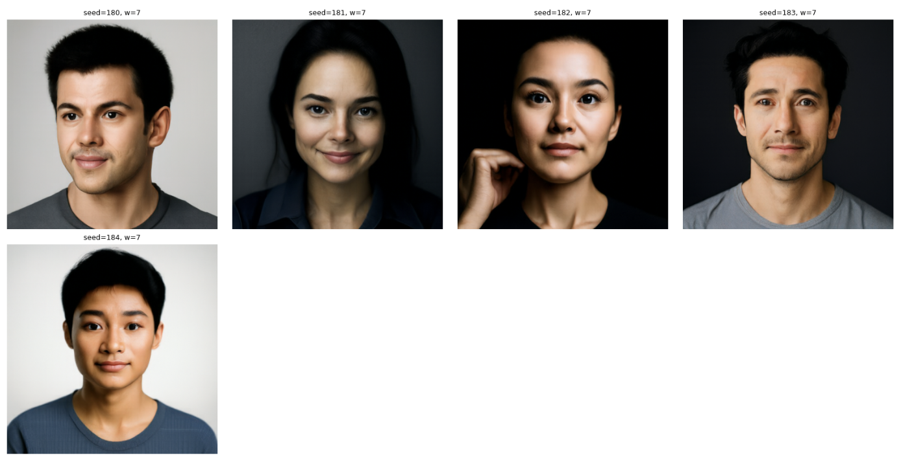
Overview
In this part of the project I used a pretrained text-to-image flow model, PixNerd-XXL-P16-T2I, which generates $512 \times 512$ images. I did not train anything myself. The model can't read a raw text string, so each prompt is first turned into an embedding with model.encode(prompt), which uses Qwen3. Instead, I wrote the pieces that sit around the model: building noisy inputs, turning the model's velocity prediction into a clean image, integrating with Euler steps, classifier-free guidance, and image-to-image editing.
Throughout, I used the linear flow-matching convention, where time $0$ is pure noise and time $1$ is a clean image:
$$x_t = (1 - t)\,\epsilon + t\,x_1, \qquad \epsilon \sim \mathcal{N}(0, I)$$
Differentiating with respect to $t$ gives the velocity along this path, $v = x_1 - \epsilon$, which is what the model $v_\theta(x_t, t, c)$ is trained to predict. All images are center-cropped and resized to $512 \times 512$ with RGB values in $[-1, 1]$.
| Setting | Value |
|---|---|
| Random seed | 180 |
| Euler step size $h$ | 0.02 |
| CFG weight $w$ | 7 |
| Default prompt | “a high quality photo” |
| Null prompt (for CFG) | “” (empty string) |
Part 1.1
A flow model is trained to predict the velocity at time t starting from noisy images. We set t=0 to a noisy image and t=1 to a clean image. For this task, I interpolated the manifold between these two endpoints by blending the noisy image and the clean image, and represented each image as (1 - t) * noise + t * clean. I checked both endpoints so it returns both exactly the noise and exactly the image.
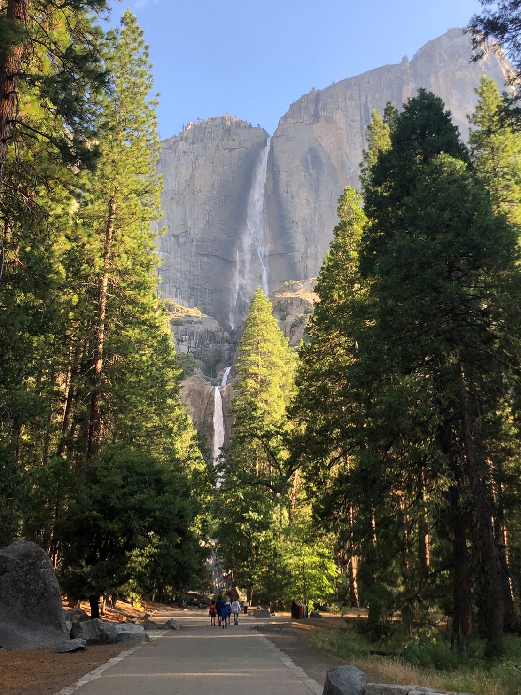
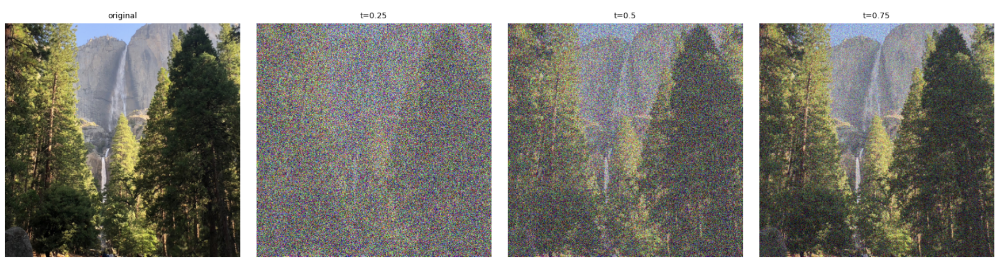
I sampled a single noise tensor (seed 180) and reused it for $t=0.25, 0.5, 0.75$.
At $t = 0.25$ the image is mostly noise, and I can only just make out the dark tree on the right. By $t = 0.75$ the scene is clearly visible with a layer of grain on top.
Part 1.2
In this task, I tried to denoise each input without the model. Since $x_t$ only contains $t$ times the clean image, I first divided by $t$ to restore the image amplitude, then applied a Gaussian blur: $\hat{x}_1 = G_\sigma * (x_t / t)$. Dividing by $t$ only fixes the brightness and does not remove any noise. The blur does the denoising, because averaging nearby pixels partly cancels independent, zero-mean noise. I swept $\sigma \in \{1, 2, 4, 8, 16\}$ and kept the blur with the lowest mean squared error against the known clean image.
When you denoise the noisy input, we want to have larder $\sigma$. A larger blur averages away more noise but also removes the detail of the scene. At $t = 0.25$ the result is only a blurry outline of the trees and sky.
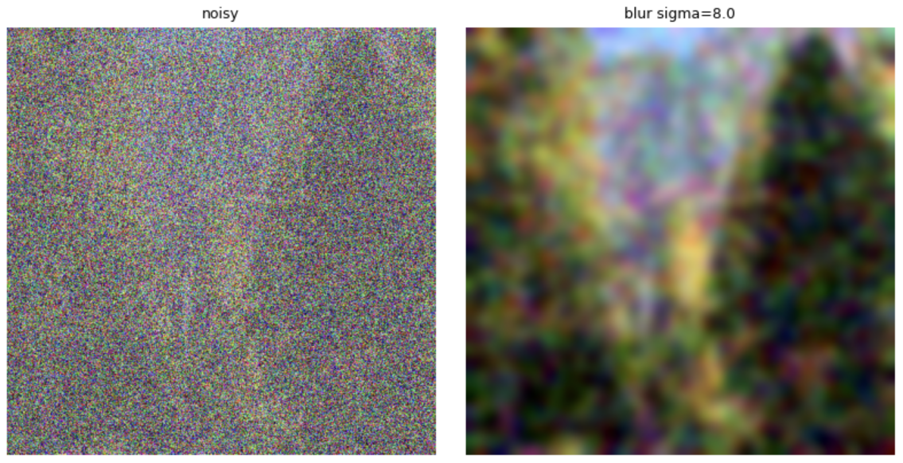
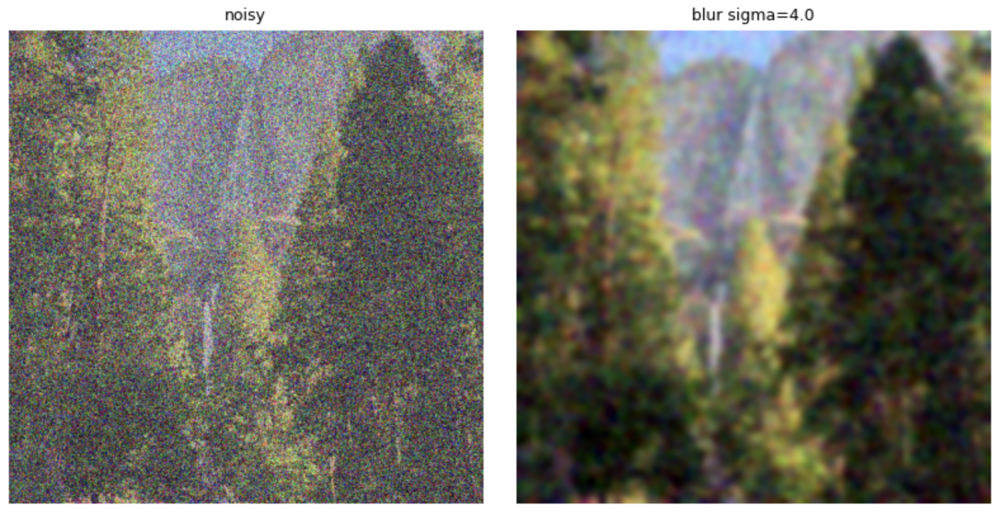
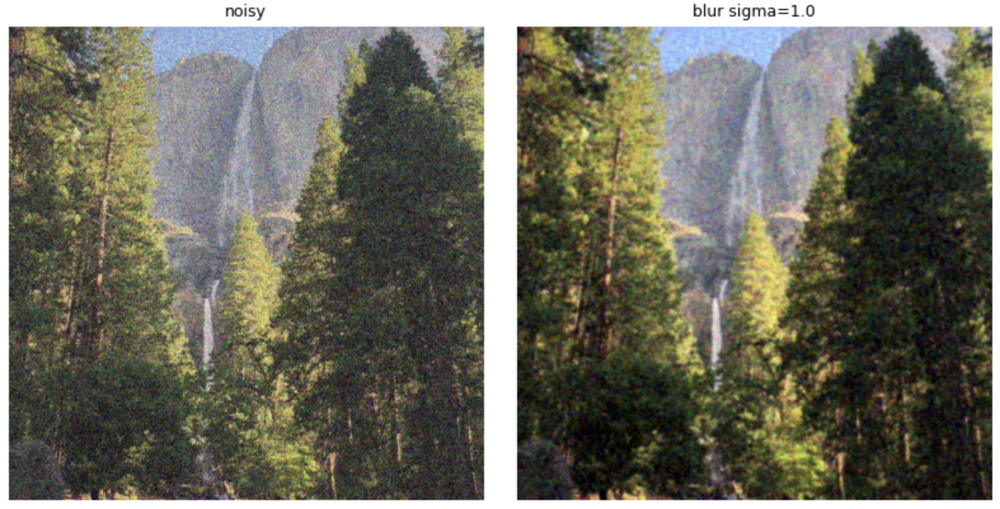
Part 1.3
In this task, I implemented this in one_step_denoise that predicts a velocity, not noise, so the prediction is added (scaled by 1-t) rather than subtracted.
$$\hat{x}_1 = x_t + (1 - t)\, v_\theta(x_t, t, c)$$
If the model's velocity were exactly $x_1-\epsilon$, then one jump of length $1-t$ would land on the clean image.
Before using this model, I checked that the predicted velocity has the same shape, dtype and device as the image and contains only finite values.
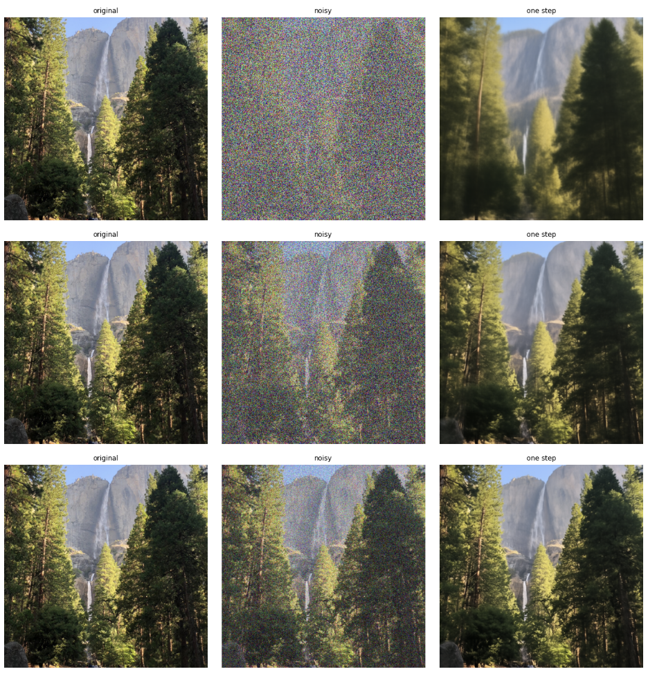
This is much better than the Gaussian blur. At $t = 0.75$ and $t = 0.50$ the estimate is close to the original. At $t = 0.25$ the overall layout (trees, cliff, waterfall) is correct, but the result is soft and smooth. With that much noise, the model cannot tell which fine detail is correct, so one step predicts something close to the average of all plausible images, which looks blurry.
Part 1.4
To see what the model adds in that one step, I compared the predicted update $(1 - t)\hat{v}_t$ with the ground-truth update. Because I saved the noise, the ground-truth velocity is $v_{\text{gt}} = x_1 - \epsilon$, so $(1 - t)v_{\text{gt}} = x_1 - x_t$. I used this value to recover my original photo.
For the error map I took the RMS difference across the RGB channels at each pixel:
$$E_t = \sqrt{\operatorname{mean}_{\text{RGB}}\big([(1 - t)(\hat{v}_t - v_{\text{gt}})]^2\big)}$$
The updates are drawn on one shared symmetric color scale, with zero shown as middle gray. The error maps also share one linear scale across all three times, so they can be compared directly.
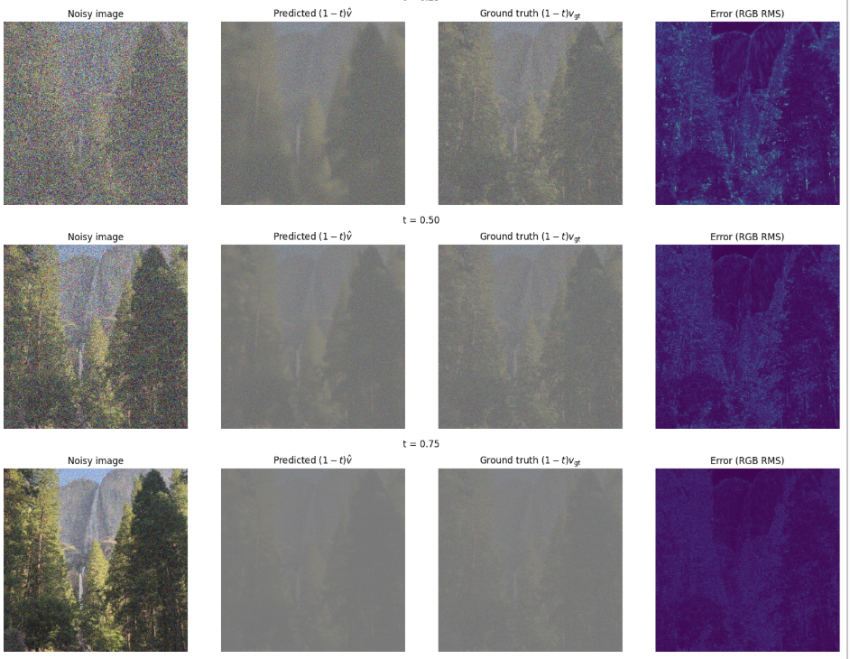
The predicted and ground-truth updates look very similar at all three times. As $t$ grows, both updates fade toward gray because the factor $(1 - t)$ shrinks and less correction is needed. The error is largest at $t = 0.25$ and is concentrated in high-frequency regions such as the tree branches and the edges of the waterfall. The flat sky and the smooth shadowed areas have low error. The model gets the coarse structure right, and the fine texture is where it has to guess.
Part 1.5
Instead of one big jump, euler_sample takes many small steps and asks the model for a new velocity at each one:
$$x_{t+h} = x_t + h \cdot v(x_t, t)$$
If the remaining time is shorter than $h$, the last step is shortened so the sampler lands exactly on $t = 1$. The function returns the final image and every $(t, x_t)$ state along the way. I tested it with a constant velocity of 1: starting from 0, 0.5 and 0.93 it made 50, 25 and 4 calls and ended at exactly $1 - t_{\text{start}}$, which confirms the step count and the shortened final step are both correct.
I then denoised the saved $t = 0.50$ input with $h = 0.02$, which takes 25 updates.
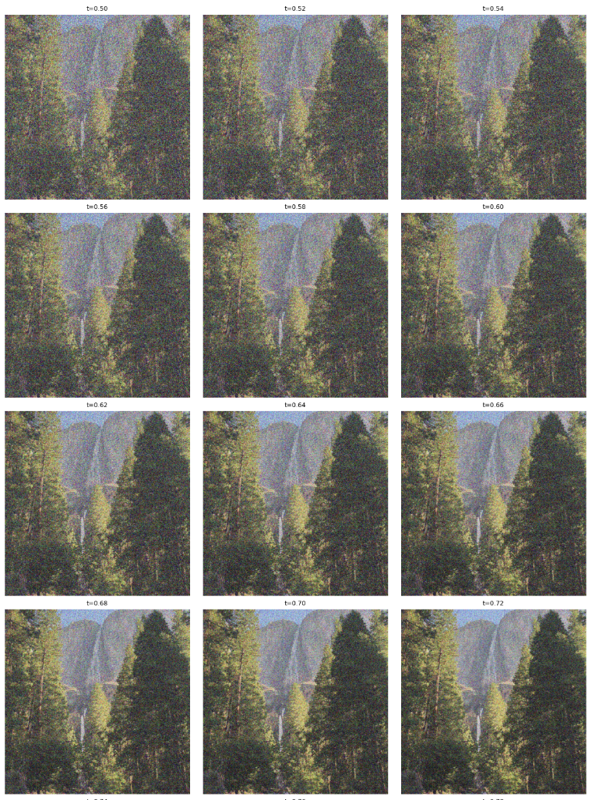
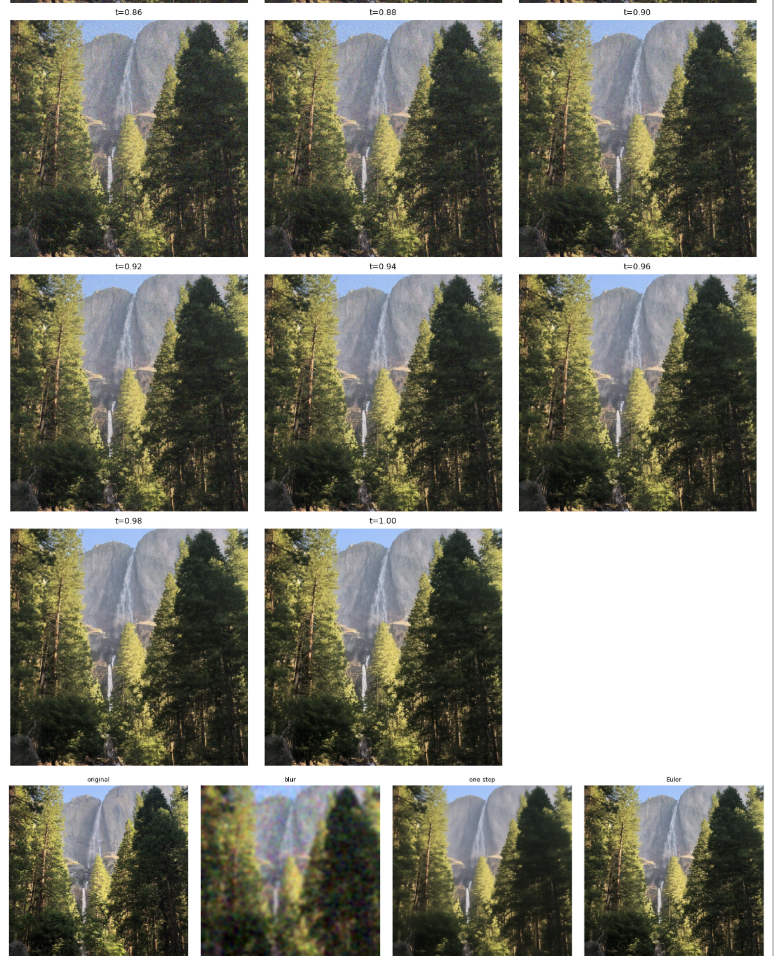
The noise disappears gradually as $t$ becomes larger, and the final image is the sharpest of the three methods. The Gaussian blur removes noise by removing detail. The one-step estimate keeps the structure but is a little soft. The Euler result recovers crisp needles on the trees and texture on the granite. Because the velocity is recomputed at each step, the model can correct its earlier guesses as the image gets cleaner, rather than committing to a single average guess.
Part 1.6
Starting Euler sampling at $t = 0$ from pure Gaussian noise turns the denoiser into a generator. I drew five independent noise tensors (seeds 180 to 184) and integrated each for 50 steps with the prompt “a high quality photo”.
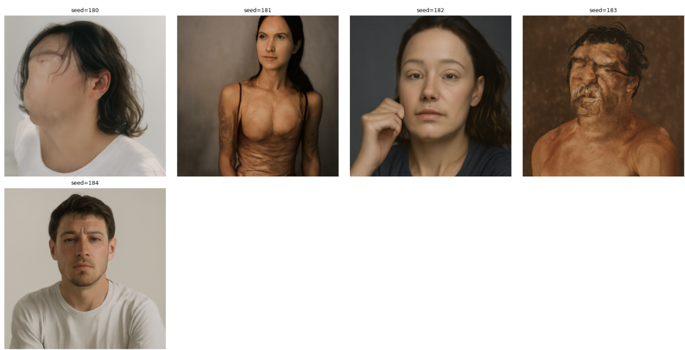
Part 2.1
In this task, I implemented cfg_velocity. Classifier-free guidance (CFG) calls the model twice at the same $x_t$ and $t$, with the prompt ($v_c$) and with the empty-string null prompt ($v_u$), and then pushes the velocity further in the direction the prompt adds.
$$v_{\text{cfg}} = v_c + w\,(v_c - v_u)$$
With $w = 0$ this reduces to the plain conditional prediction, and I checked that my implementation returns exactly that. I used $w = 7$ and regenerated the five samples from 1.6 with the same starting noises, so the only difference is the guidance.
Now all the samples are clean and sharp with more realistic face. Some of the layout carries over from the same noise such as the hand raised to the cheek in seed 182.
Although this approach increases accuracy of the output image, there is a trade-off of image quality and diversity. Guided samples look much more alike (centered face, plain background, similar framing), because CFG pulls each sample toward the most “prompt-like” region of image space.
Part 3.1
To edit an existing image, I add noise to it, so it becomes $x_{t_{\text{start}}} = (1 - t_{\text{start}})\epsilon + t_{\text{start}} x_1$. Then I run the Euler sampler with CFG from $t_{\text{start}}$ to 1. The model has to “fill in” what the noise destroyed, so the result is a new image that keeps some of the original. I used the starting times $0.02, 0.04, 0.06, 0.10, 0.14, 0.25, 0.50$ with the prompt “a high quality photo”, $w = 7$ and $h = 0.02$.
A small $t_{\text{start}}$ means almost pure noise, so only the coarsest information (overall brightness and color layout) survives. A large $t_{\text{start}}$ keeps most of the original image.
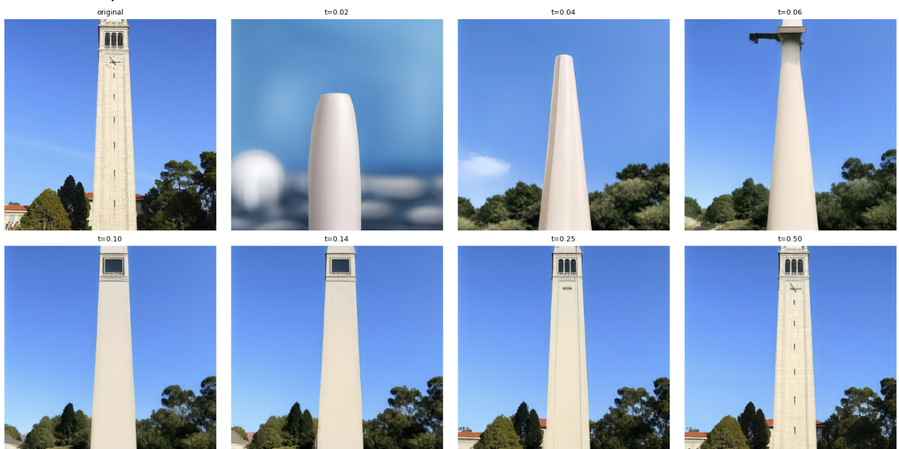
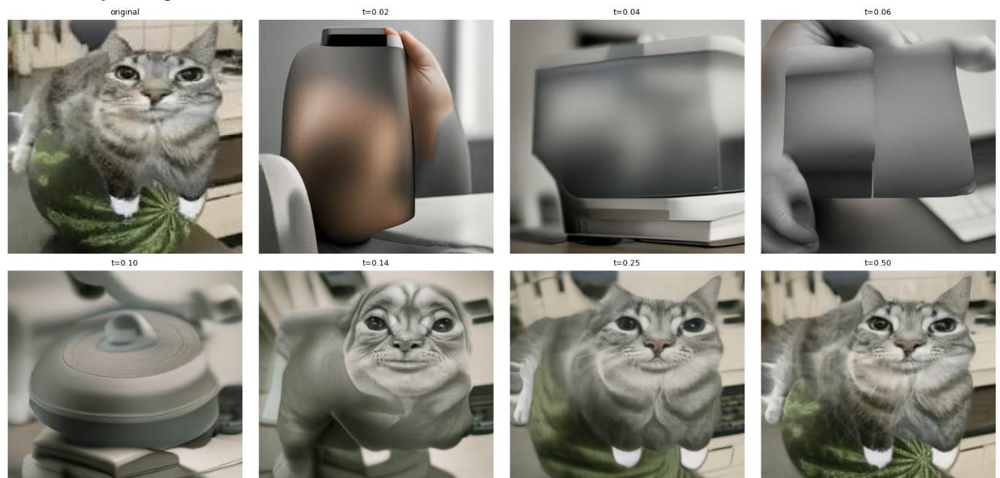
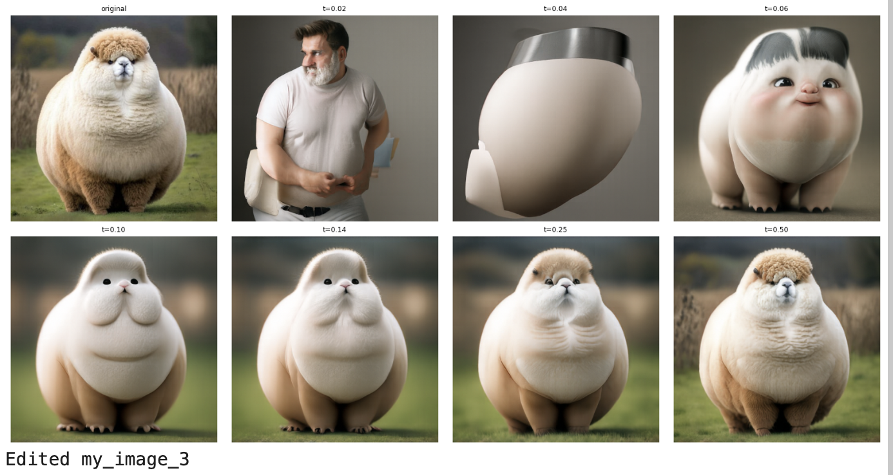
All three show the same progression. At $t_{\text{start}} = 0.02$ to $0.06$ the model invents something unrelated that only shares the color layout: the Campanile becomes a white pillar against blue sky, the cat becomes a gray appliance, and the llama becomes a man in a white shirt. That fits the portrait bias I saw in 1.6. Around $t_{\text{start}} = 0.10$ to $0.14$ the subject's silhouette is restored, but with simplified detail: a smooth obelisk instead of a brick tower, and a hairless, seal-like llama. By $0.25$ and $0.50$ the edit is a close, slightly cleaned-up version of the original.
I repeated the same procedure on one image from the web (a Chiikawa character) and two of my own drawings (Momonga and Usagi), using the same seven starting times.
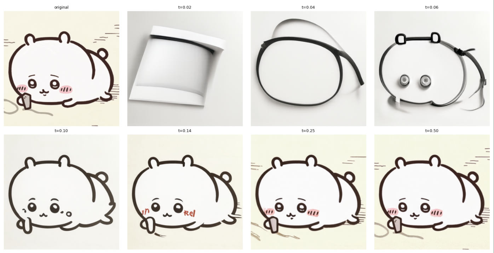
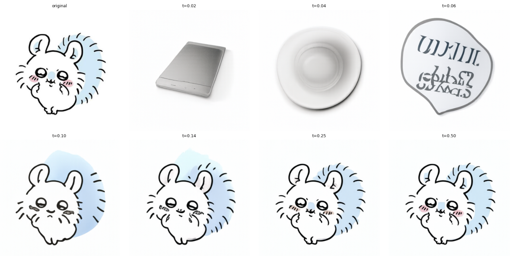
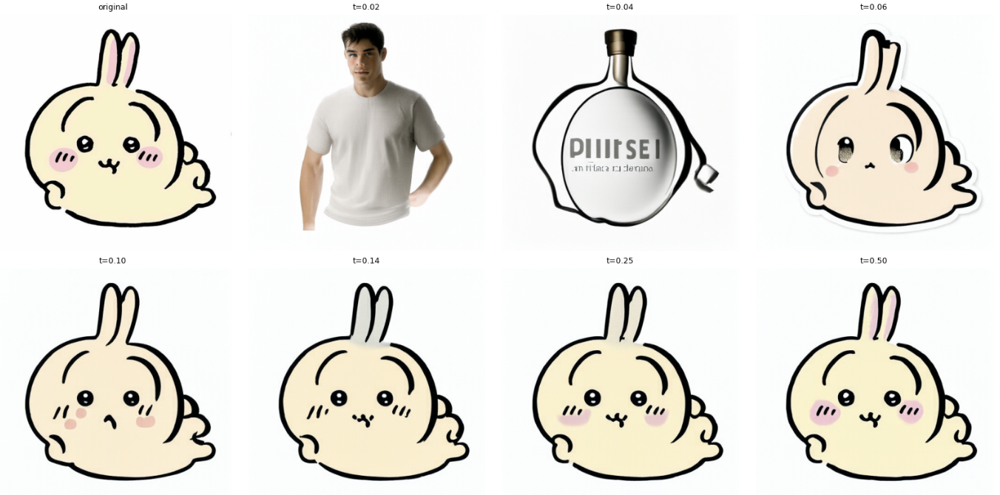
The drawings are a fun test because “a high quality photo” pushes the model toward realism. At the smallest starting times it turns the mostly white canvas into photos of white objects: a tablet, a bowl, a sticker with made-up lettering, a perfume bottle, and again a man in a white T-shirt. At $t_{\text{start}} = 0.04$ to $0.06$ the black outlines turn into real-looking objects, such as a rubber band or a pair of glasses with button eyes. From about $0.10$ on, the model keeps the line-art style and the characters come back. It only loses small details, like the blush marks and the exact facial expression, until those return around $0.25$ to $0.50$.
Part 3.2
This uses the same edit function as 3.1, but replaces the generic photo prompt with a prompt that describes the edit I want. The noise erases part of the image and the new prompt decides what fills it back in. I used the same seven starting times on the Campanile, the Chiikawa web image and my drawing of Usagi:
| Image | Prompt |
|---|---|
| Campanile | “a beautiful watercolor painting of the UC Berkeley Campanile surrounded by cherry blossoms” |
| Chiikawa | “a cute fluffy cat sitting in a magical forest, whimsical storybook illustration” |
| Usagi | “a cute llama wearing a colorful knitted sweater, in a sunny meadow” |
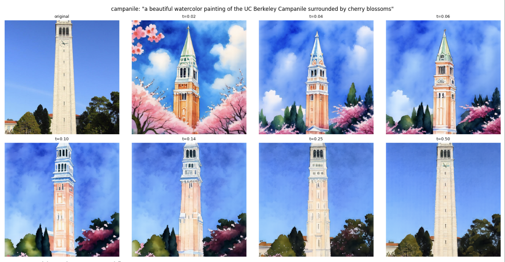
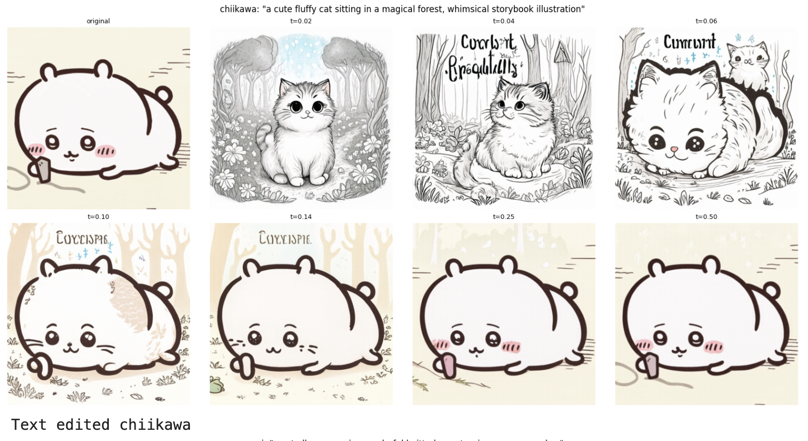
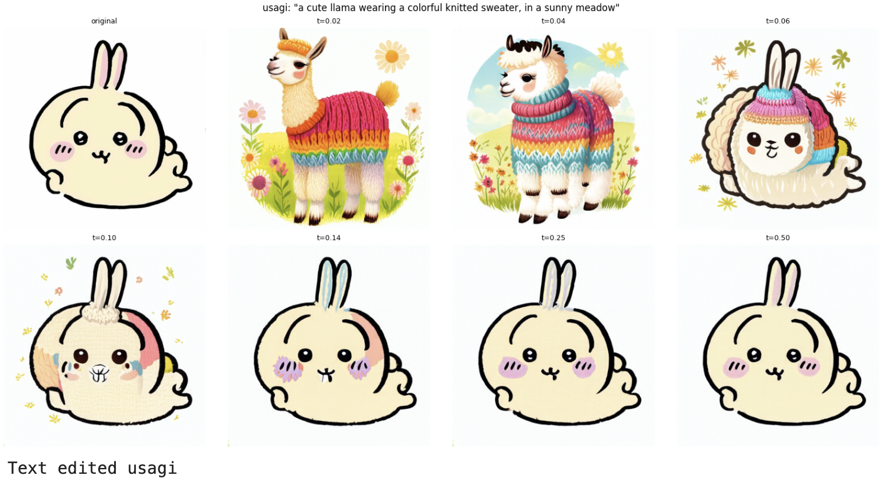
At low $t_{\text{start}}$ the prompt wins: at $0.02$ to $0.04$ the Campanile becomes an orange European-style bell tower framed by cherry blossoms, Chiikawa becomes a sketched kitten in a forest, and Usagi becomes a full llama in a knitted sweater. At $0.25$ and $0.50$ the original wins and only the texture changes, such as a light watercolor wash on the tower. The best edits are in between. Around $0.06$ to $0.10$ Usagi keeps its ears and round body but gains a knitted hat and llama fur, and Chiikawa keeps its pose while picking up whiskers and a forest background. The Campanile looks best around $0.10$ to $0.14$, where it keeps its real shape but is painted in watercolor.
Part 3.3
A visual anagram is a single image that shows one thing upright and something else when rotated by 180°. Let $F$ be a 180° rotation, which flips both spatial axes. At every Euler step I compute two guided velocities and average them:
$$v = \tfrac{1}{2}\Big( v_{\text{cfg}}(x_t, t, c_a) + F\big(v_{\text{cfg}}(F(x_t), t, c_b)\big) \Big)$$
I implemented this in visual_anagrams. The first term denoises the image toward prompt $a$ as it is. The second rotates the image, denoises it toward prompt $b$, and rotates that velocity back. Since $F(F(x)) = x$ (I checked this), both views are pushed toward their own prompt at every step. I integrate from pure noise with the same Euler sampler.
Prompt pairs: “an oil painting of an old man” / “an oil painting of people around a campfire”, and a baby cow's face / a cloudy Swiss mountain meadow (full prompts in the figure).
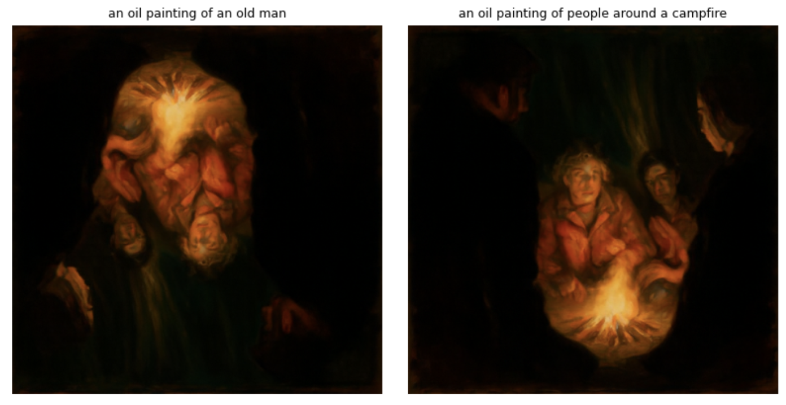
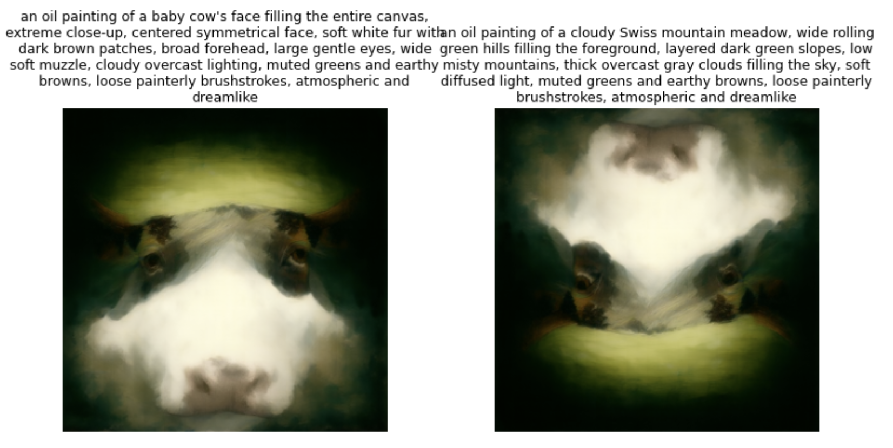
Part 3.4
This is the generative version of the hybrid images from Project 2, adapted from Factorized Diffusion and implemented in make_hybrids. At each Euler step I compute guided velocities for both prompts at the same $x_t$ and $t$. I keep the low frequencies of prompt $a$ and the high frequencies of prompt $b$:
$$v = \text{LP}(v_a) + \big(v_b - \text{LP}(v_b)\big)$$
$\text{LP}$ is a Gaussian blur with $\sigma = 16$ and kernel size 265 at $512 \times 512$. Seen from far away (or at a small size) only the low frequencies are visible, so prompt $a$ shows. Up close, the high-frequency detail of prompt $b$ takes over.
Prompt pairs: apple / apple pie, and flower / butterfly.
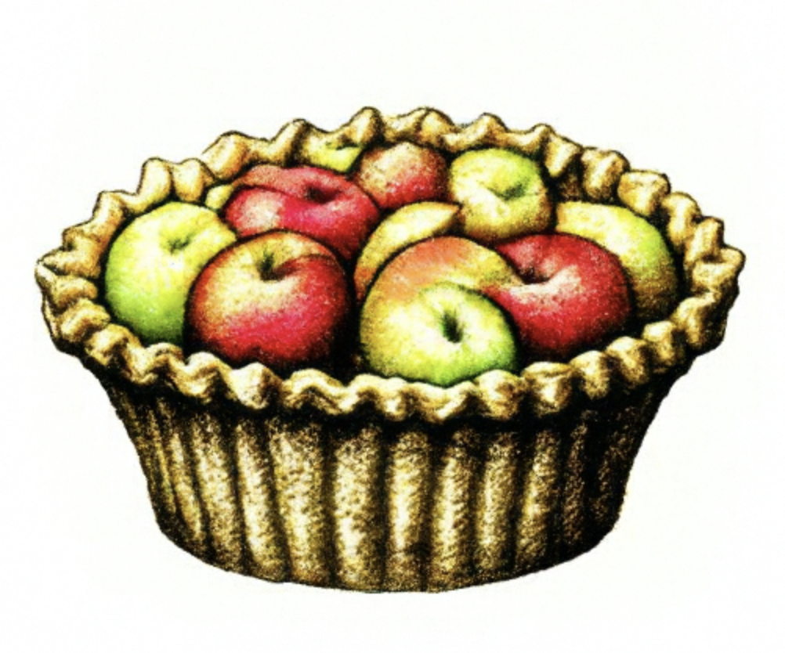
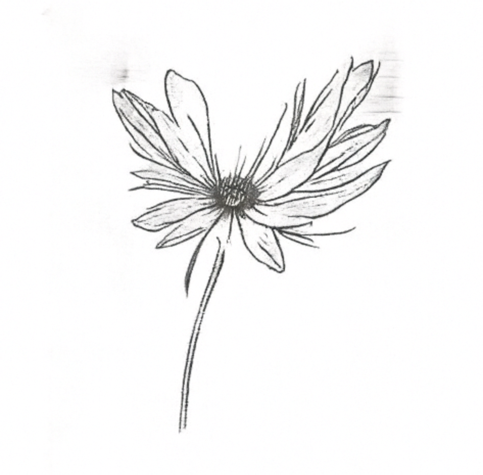
Bells & Whistles
Project 3 · Part B
Training a one-step denoiser and then time- and class-conditioned flow matching UNets on MNIST.
Part B · 1.1
I built the UNet from the standard operations in the spec:
| Block | Implementation |
|---|---|
| Conv | Conv2d(3, stride 1, pad 1) → BatchNorm → GELU. Keeps the resolution. |
| DownConv | Conv2d(3, stride 2, pad 1) → BatchNorm → GELU. Halves the resolution. |
| UpConv | ConvTranspose2d(4, stride 2, pad 1) → BatchNorm → GELU. Doubles the resolution. |
| ConvBlock | Two Convs in a row. |
| DownBlock / UpBlock | DownConv or UpConv followed by a ConvBlock. |
The unconditional UNet encodes a $28 \times 28$ digit with a ConvBlock ($D$ channels), then two DownBlocks that go to $14 \times 14$ ($D$ channels) and $7 \times 7$ ($2D$ channels). The decoder upsamples back with UpConvs. At each resolution it concatenates the matching encoder feature map (the skip connection) and mixes it with a ConvBlock. A final $1 \times 1$ convolution maps $D$ channels back to one output channel. I checked that a batch of shape $(8, 1, 28, 28)$ comes out with the same shape.
Part B · 1.2
The denoiser $D_\theta$ is trained to map a noisy digit $z = x + \sigma\epsilon$, with $\epsilon \sim \mathcal{N}(0, I)$, back to the clean digit $x$ by minimizing the L2 loss $\lVert D_\theta(z) - x \rVert^2$. MNIST pixels are in $[0, 1]$. As $\sigma$ grows, the digit disappears into the noise.
I trained the UNet with $D = 128$ on the MNIST training set for 5 epochs, with batch size 256 and Adam at a learning rate of $10^{-4}$. The dataloader shuffles the data, and I noise each batch with $\sigma = 0.5$ only when it is fetched. That way the network sees fresh noise on every pass instead of a fixed noisy dataset.
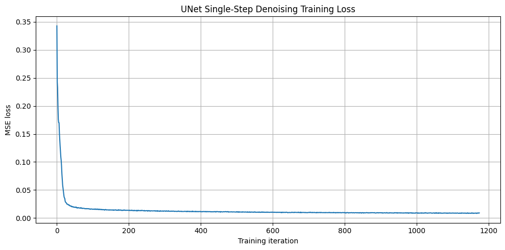
The loss falls from about 0.34 to below 0.03 within the first ~30 iterations, then keeps slowly decreasing to about 0.01 by the end of epoch 5.
The denoiser only saw $\sigma = 0.5$ during training. To see how it handles other noise levels, I took eight test digits and noised each one with the same noise pattern scaled to $\sigma = 0.0, 0.2, 0.5, 0.8, 1.0$.
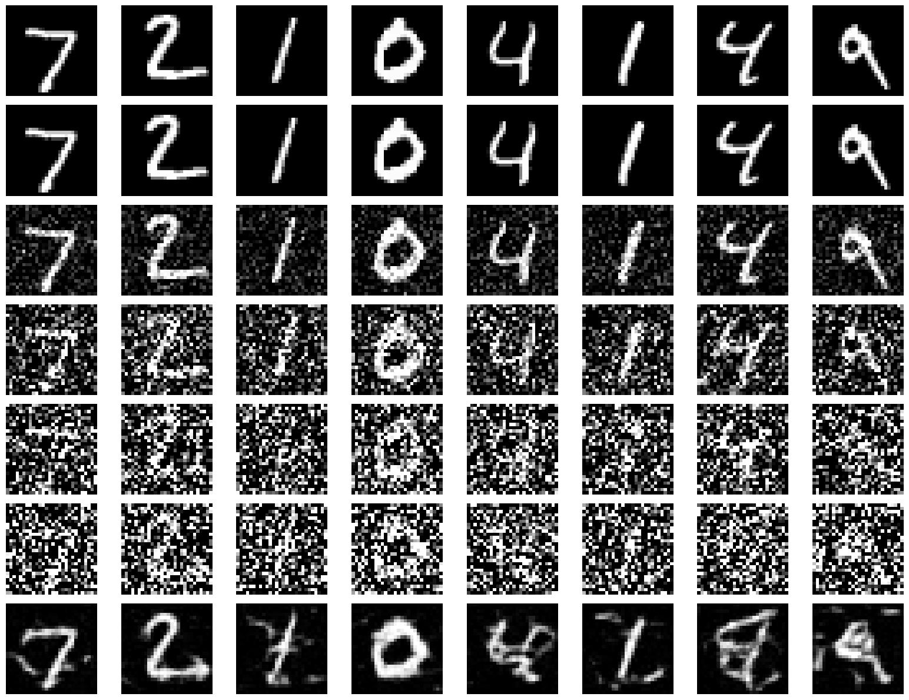
At $\sigma = 1.0$, twice the training noise, the denoiser still recovers the 7, 2 and 0 well, but the 1s, 4s and the 9 turn into tangled strokes. With that much noise the network can't tell which bright pixels belong to the digit, so it makes up extra strokes that look like parts of other digits.
i + 2 (denoised) is overwritten by the next noise level's noisy row i + 1, so only the $\sigma = 1.0$ output survives. Give each $\sigma$ its own pair of rows (e.g. rows 2i + 1 and 2i + 2) and replace this figure with denoised results at every $\sigma$.To turn the denoiser into a generator, I trained a fresh $D = 128$ UNet with the same settings (5 epochs, batch 256, Adam $10^{-4}$). This time the input is pure Gaussian noise $z = \epsilon$, independent of the target digit.
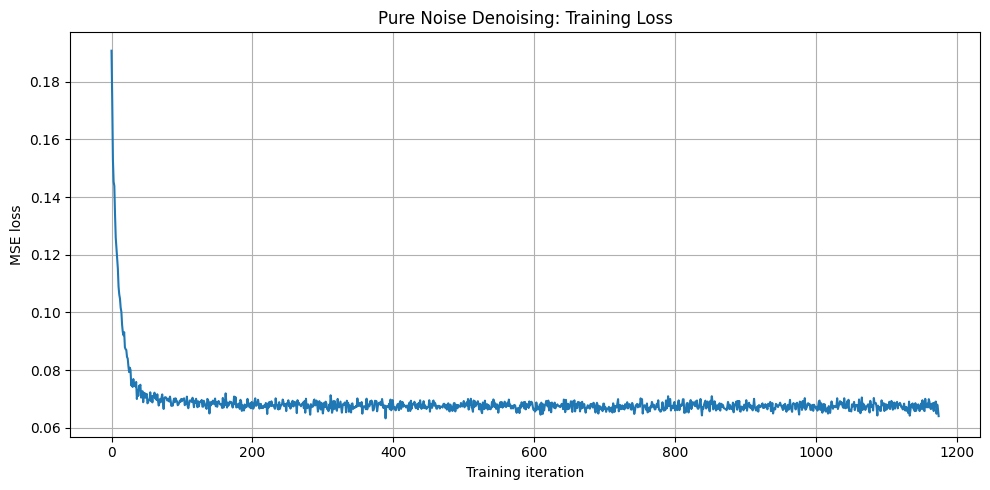
Unlike in 1.2.1, the loss levels off almost right away. The average loss per epoch was 0.0739, 0.0677, 0.0675, 0.0674 and 0.0674. Epochs 2–5 barely improve, because the input carries no information about which digit is the target.
With an MSE loss, the best prediction for a given input is the average of all targets that could go with it. Here every digit is equally likely for any noise input, so the minimizer is a single image, the pixel-wise mean of the training set. That is the centroid of all MNIST digits. The model learns to output roughly the same blurry, glowing blob for every input: bright in the center, where most digits have ink, and dark at the edges. It looks like several digits (0, 3, 8, 9) overlaid on top of each other rather than any one digit. The loss levels off at about the average per-pixel variance of the dataset, which is the lowest any input-independent prediction can reach.
epoch1_state, epoch5_state) but never samples from them. Check that the samples match the description above.Part B · 2.1
One-step denoising can't generate, so I switched to flow matching. A training point is a linear interpolation between noise $x_0 \sim \mathcal{N}(0, I)$ and a clean digit $x_1$:
$$x_t = (1 - t)\,x_0 + t\,x_1, \qquad u(x_t, t) = \frac{d x_t}{dt} = x_1 - x_0$$
The UNet $u_\theta(x_t, t)$ learns to predict this flow with the loss $\lVert u_\theta(x_t, t) - (x_1 - x_0) \rVert^2$.
To give the network $t$, I added an FCBlock (Linear(1, D) → GELU → Linear(D, D)). Two FCBlocks embed the scalar $t \in [0, 1]$, and their outputs are broadcast over the spatial dimensions. One goes into the first decoder stage right after the $7 \to 14$ upsampling, and the other into the second stage after the $14 \to 28$ upsampling. In my implementation the embeddings are added to these feature maps before the skip concatenation.
Part B · 2.2
For each batch I sample fresh noise $x_0$ and a time $t \sim U[0, 1]$ for each image, build $x_t$, and regress the UNet's output onto $x_1 - x_0$. In this run I used $D = 128$, batch size 256, and Adam at a constant learning rate of $10^{-4}$ for 5 epochs.
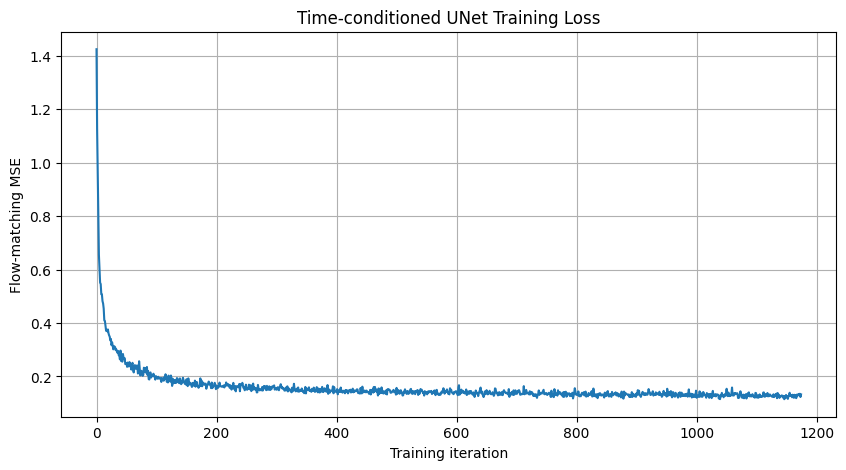
The loss starts at about 1.4 and drops quickly. The average loss per epoch was 0.236, 0.151, 0.141, 0.134 and 0.130. It is higher than the denoiser's loss because the target $x_1 - x_0$ includes the noise itself, which is hard to predict when $t$ is close to 1.
Part B · 2.3
To sample, I start from pure noise at $t = 0$ and take 50 Euler steps of size $1/50$, $x \leftarrow x + \tfrac{1}{50}\,u_\theta(x, t)$, ending at $t = 1$.
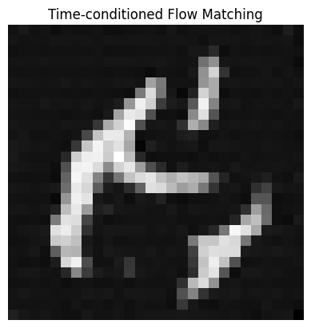
The sample has clean, digit-like strokes on a black background, but they don't come together into one recognizable digit. It looks like pieces of a 4 and a 7 drawn on top of each other. Without a class label, the model has to commit to one digit early on, from noise alone, and a time-only model this small doesn't always do that.
ExponentialLR. This run used $D = 128$, batch 256, constant $10^{-4}$, for 5 epochs.Part B · 2.4
To control which digit gets generated, I also conditioned the UNet on the class $c \in \{0, \dots, 9\}$. Instead of a one-hot vector passed through an FCBlock, I used a learned embedding table nn.Embedding(11, D) for each of the two decoder stages. That is mathematically the same as a linear layer applied to a one-hot vector. The 11th entry is a learned “null” class. During training, each label is replaced by the null class with probability $p_{\text{uncond}} = 0.1$, so the same network also learns the unconditional flow needed for classifier-free guidance. As with time, the class embeddings are added to the decoder feature maps at the same two places.
Part B · 2.5
Training is the same as for the time-only model, except the class labels are passed in and randomly dropped. I followed the recommended settings: $D = 64$, batch size 64, 10 epochs, Adam with initial learning rate $10^{-2}$, and ExponentialLR with $\gamma = 0.1^{1/10}$, so the learning rate falls by 10× over the 10 epochs. I called scheduler.step() once per epoch.
To remove the scheduler, I trained a second, independent model with the same settings but a constant learning rate of $10^{-3}$. Without a schedule, $10^{-2}$ would stay too large late in training. $10^{-3}$ sits between the schedule's starting value and its final value (about $1.3 \times 10^{-3}$), so it is small enough to settle into a minimum on its own.
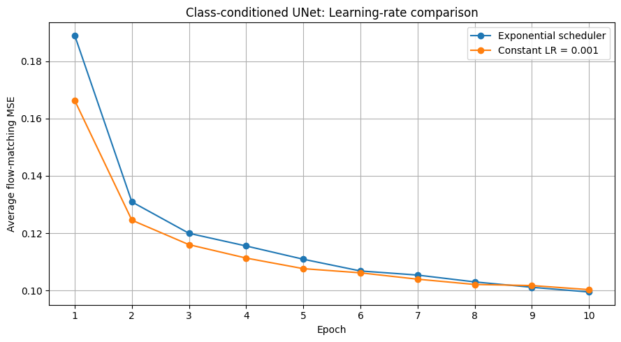
The constant-rate model has lower loss for the first eight epochs (0.166 vs. 0.189 after epoch 1), because the scheduled model's $10^{-2}$ start is too aggressive at first. The two curves meet by epoch 9 and end almost the same: 0.0995 with the scheduler and 0.1003 without it. A single well-chosen constant learning rate matches the schedule's final loss.
scheduled_losses, constant_losses) instead, or add that plot as well.Part B · 2.6
Sampling uses 300 Euler steps from pure noise with classifier-free guidance at scale $\gamma = 5$. At every step I evaluate both the conditional and the null-class velocity and combine them:
$$u = u_\theta(x_t, t, \varnothing) + \gamma\,\big(u_\theta(x_t, t, c) - u_\theta(x_t, t, \varnothing)\big)$$
Each grid shows four samples of each digit (rows 0–9) with the same starting noise at every checkpoint, so differences between grids come only from training.
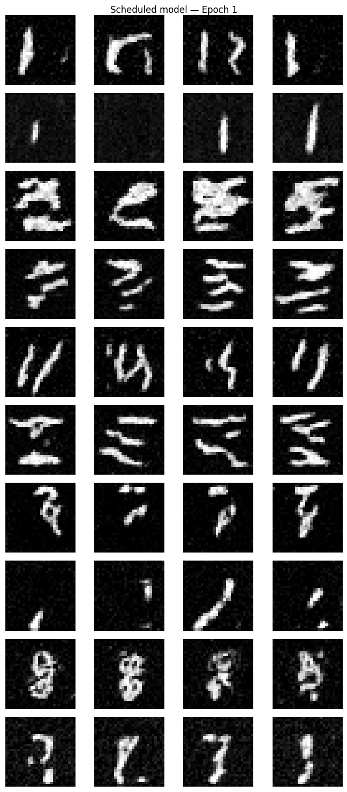
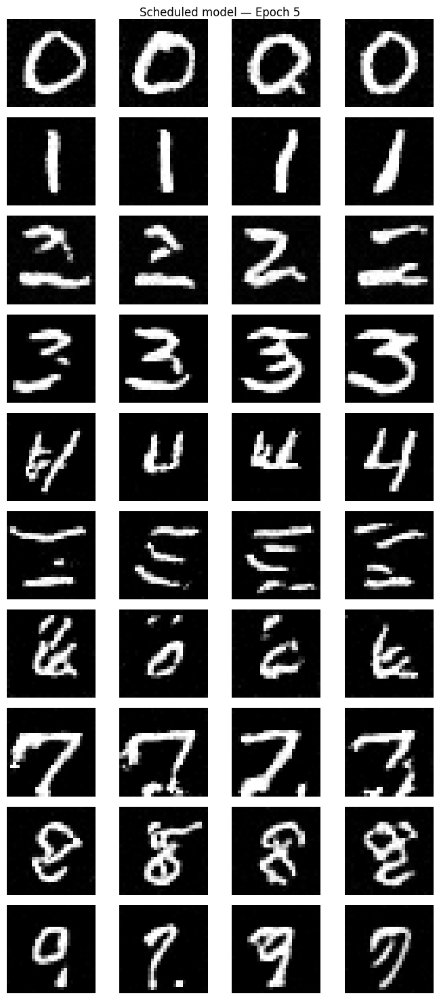
After one epoch, only the 1s and 8s are clearly readable. Most other rows are disconnected strokes with a little leftover background noise, although some already have the right rough shape (stacked horizontal bars for the 3s and 5s). By epoch 5 the background is clean and the 0s, 1s, 3s and 7s are clearly correct. The 2s, 4s, 5s, 6s and 9s are still often malformed. The 5s in particular are stacked bars without the vertical stroke.